¿Cómo se cura una resaca?
Su nombre significa "medicina" en swahili, en broma por su supuesto poder curativo para las resacas. Se popularizó en el famoso restaurante Carnivore de Nairobi, donde se prepara tradicionalmente machacando la lima y la miel con un mazo de madera especial.
RECETA
- 50ml vodka
- 1/2 limón
- 2 cucharaditas de miel
- Machaca ligeramente la lima con la miel en un vaso
- agrega el vodka y hielo, y mezcla bien
- decorar con un gajo de limón
- Sumergir un palo de madera tipo dawa en miel y colocarlo en el coctél para seguir mezclando
Vaso: Old fashioned / vaso bajo